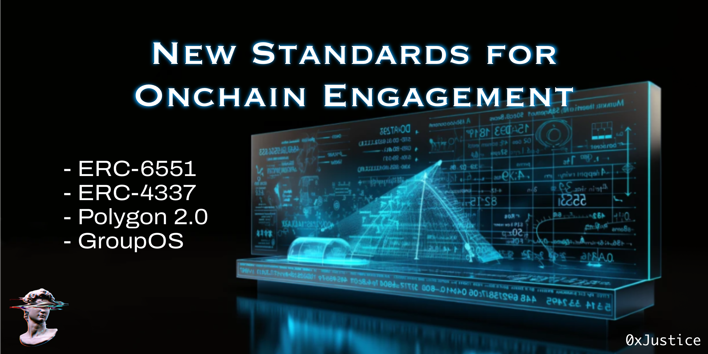
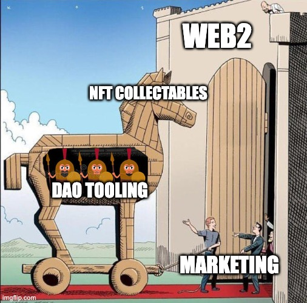

New Standards for Onchain Engagement
Originally published at https://paragraph.com/@0xjustice/new-standards-for-onchain-engagement

DAO tooling is the business infrastructure of the 21st century. This category includes anything that enables collective ownership and management of digital assets. The future of business is onchain.
This thesis is why I take a particular interest in DAO launchers. A DAO launcher is a batteries-included tool that internalizes or aggregates the essential functions of an onchain organization, including but not limited to membership, governance, and treasury management.
This essay will introduce a new launcher or operating system from Station Express called GroupOS. We'll explore their perspective on digital communities and how they plan to evolve engagement using new token standards. We'll also consider how this approach, coupled with Polygon's scaling technology, unlocks improved UX and engagement possibilities.
New Tools: GroupOS
Station's mission is to create new ways to coordinate online. The latest product, GroupOS, creates a modular toolkit powering internet organizations to own, govern, reward, and monetize their network. You can read more about their vision here.
We typically think of DAOs as something in antithesis to traditional organizations. This unqualified counter-positioning is a false dichotomy. Traditional businesses have a vested interest in adopting DAO-style patterns of empowerment and decentralization among their users and employees. Doing so creates dramatically greater engagement and resiliency. The growing popularity of Employee Stock Option Programs (ESOPs) and newer crypto-native loyalty programs evidence this claim.
GroupOS offers a no-code interface and developer-centric APIs/SDKs designed to further advance and amplify this dynamic. They are building explicitly for growth and community strategy. Read the full announcement below.
https://station.mirror.xyz/wV3sS2WN8DymlBtRVa5tn6tLxQx3mu_6rEdoydy_SGU
New Infra: Polygon 2.0
By building on Polygon, GroupOS leverages the most future-proof and business-centric Ethereum scaling solution in Web3. Polygon's ZK roll-up technology ensures final settlement and security rest on Ethereum, while efficient bridge technology ensures users have the experience of shared liquidity across the entire Polygon network.
Add to this the innumerable enterprises already building on Polygon, such as Reddit, Nike, Starbucks, Draft Kings, Adidas, Disney, Prada, Meta, Stripe, etc., and you understand the strategic advantage of building on Polygon.



 24[
24[
8:15 AM • Aug 22, 2023
](https://twitter.com/singularityhack/status/1693975070639554620)
This is the non-secret secret. The NFT loyalty and collectible programs deployed by many of these brands are the first steps in user and employee engagement. Building reputation, game mechanics, private access, and greater capabilities into and on top of these deployments is the natural next step. But to do this, the technology and infrastructure must be able to support it. This is where GroupOS and newly emerging standards come in.
New Standards
Part of what sets GroupOS apart is its integration of two new standards: Token Bound Accounts and Account Abstraction.
Token Bound Accounts
Token Bound Accounts (TBAs) is a new standard (ERC-6551) that extends the base NFT standard (ERC-721), imbuing NFTs with smart contract capabilities. Previous attempts to do this didn't catch on because they required migrating individual collections to that new standard. One of the things that makes this latest approach so impactful is that it upgrades all NFTs to possess this ability.
This upgrade imbues every NFT with the ability to own any digital asset, just like a wallet. The nature of these assets includes everything from fungible (ERC-20), non-fungible (ERC-721), and semi-fungible (ERC-1155) assets. The change may sound pedantic, but consider how small changes can have an oversized impact in the seminal stages of early technology. Something as simple as the like button has created entirely new advertising industries.
Token Bound Accounts mean value accrues directly to the NFT held by users. This accrual could include history, reputation, and incentives. It stimulates new interface paradigms where users sign transactions with specific tokens and facilitates a unifying psychological source of truth for branded assets, scoping rewards, and activity to that NFT. Let's look at the second standard now.
Account Abstraction
There are fundamentally two kinds of accounts on the Ethereum blockchain. There are externally owned accounts (EOAs) and smart contracts. EOAs are user-controlled accounts like your wallet. You control them, and it's through them that you initiate transactions. Smart contracts, on the other hand, are more like autonomous vending machines. They exist independently from you and can only respond to external triggers like interactions from your EOA.
Account Abstraction (ERC-4337) makes it so EOAs can also be smart contracts behind the scenes, thus creating Smart Accounts. This abstraction opens the door to adding unlimited and open-ended logic to what has traditionally been dumb accounts. Think of it as a programmable wallet. You can program it to do stuff when it receives funds or only do certain things if predefined requirements are met.
With this upgrade, users could log in to their wallets with an email, social account, or phone number or leverage social recovery if their keys are lost. It allows users to pay for others' gas costs or delegate payment to a third party. It also allows users to make multiple calls within a single operation.
It lifts Web3 UX to the level of Web2 expectations while maintaining all of the capabilities that make crypto unique. You can see why it's so special.
New Users
The technology is impressive, but what's even more exciting is the new use cases these standards make possible. Taken together, they enable tradable money robots in the form of NFTs. These entities could be autonomously managed portfolios. Imagine a site like Flippa where people buy and sell Internet startups but where each company is fully encapsulated as an NFT. Our imagination is the only limit.
GroupOS is trying to put all these upgrades into users' hands. Their first self-serve member's module provides NFT-as-a-wallet and holistic onchain membership solutions to onboard, engage, and incentivize users. Developers and community managers can provide flexible gas subsidization and dynamic NFT programs to minimize onboarding friction and create continuous onchain events to understand and improve onchain conversion and retention.

onchain is the new online.
69[
11:37 AM • Jan 20, 2023
](https://twitter.com/hongkim__/status/1616490027214868480)
GroupOS will provide all this for the companies that have entered Web3 through NFT loyalty programs and collectables. By leveraging the new token standards to create dramatically better UX and catering to institutions already engaged in crypto-native community management programs, they are positioned to extend and expand on what's already being used and is working.
Conclusion
Collective ownership and decision-making must move beyond the typical DAO stack of two years ago. Innovating at the app, standards, and audience level is necessary to drive adoption.
Polygon brings the app chain thesis to life with Web2 scale and ZK-enabled interoperability. New standards like Token Bound Accounts and Smart Accounts bring Web3 UX up to user expectations. GroupOS brings both together under a beautiful interface, exposing all the magic of collection ownership and management to a new audience of business users. Stay ahead of the curve by creating a test NFT collection with GroupOS on Polygon here now.
What's the missing piece in all this? I believe it's the mental model that sees DAOs as existing on a spectrum rather than as a binary. These tools and capabilities benefit startups and traditional businesses in addition to conventional DAO communities. The idea of what is or isn't a DAO must evolve to include all digital collectives along this broad spectrum. This final aspect of new mental models will free community and business builders to apply these new technologies innovatively and usher in the subsequent billion users owners of the Internet.
Originally published on 0xJustice.eth